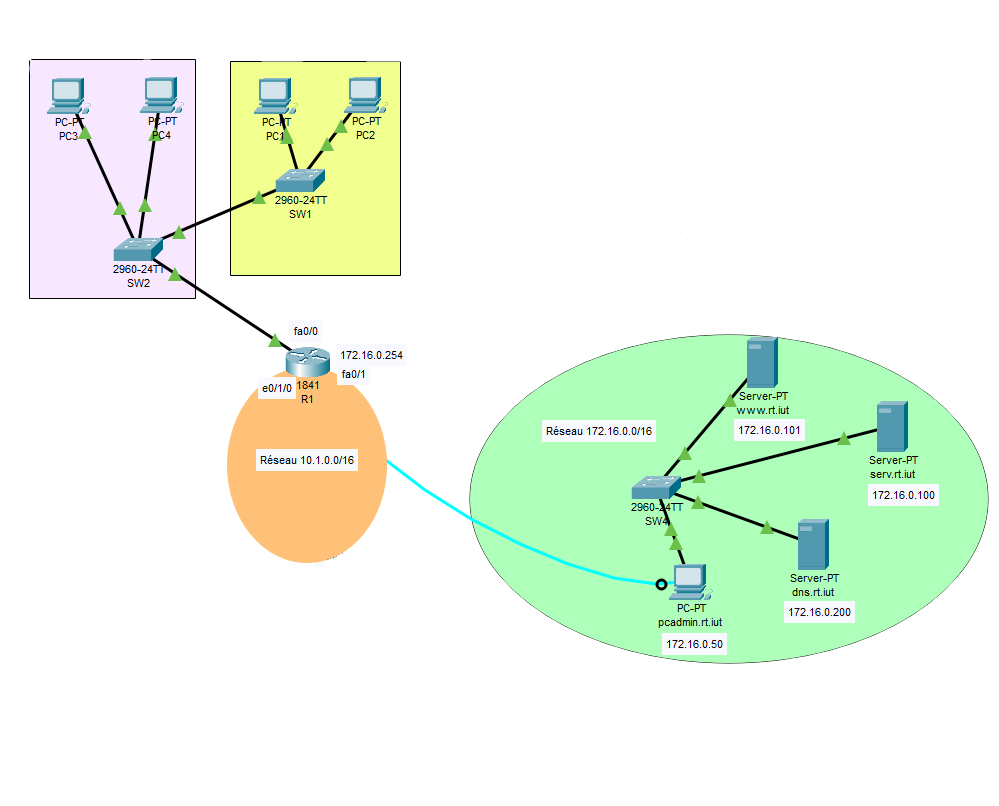
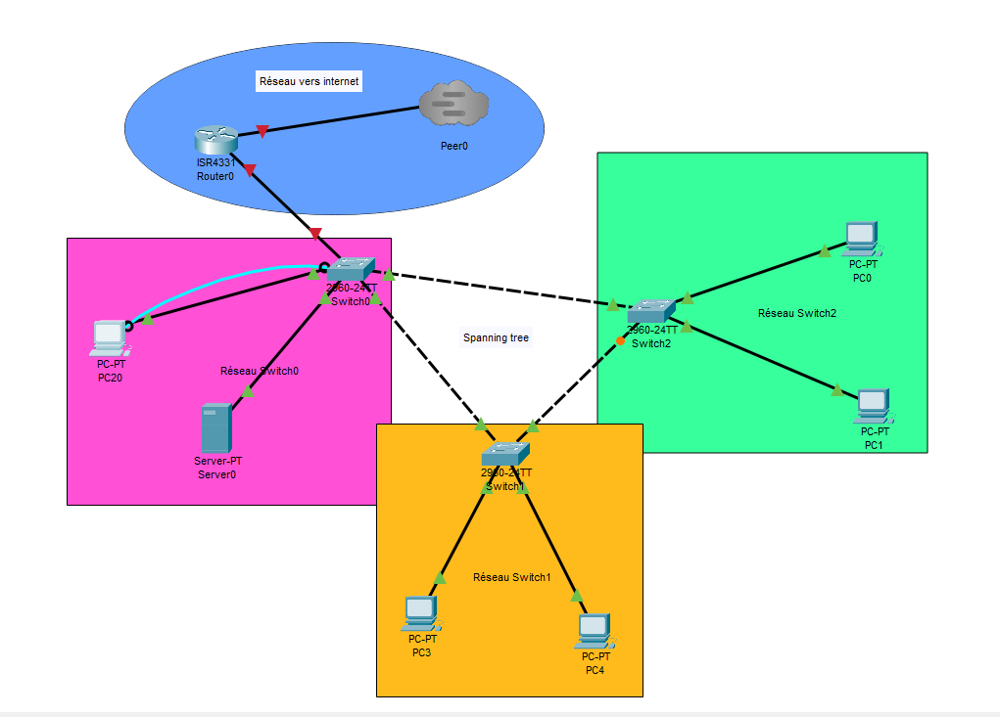

Exemple de routage effectué
Compétences acquises
- Mettre en place des réseaux IP avec routage statique
- Configurer les routeurs (interfaces)
- Configurer des ordinateurs (adresse IP / route par défaut / masques)
- Utilisation de Packet Tracer pour simuler et tester les configurations.
Objectifs
- Concevoir et déployer un réseau informatique opérationnel.
- Identifier et comprendre les différents composants d’un réseau.
- Maîtriser la configuration des équipements et postes de travail.
- Assurer un fonctionnement fiable et stable avec Cisco.
Auto-réflexion
Au cours de cette formation, j’ai acquis les compétences nécessaires pour concevoir, configurer et déployer un réseau informatique fonctionnel et fiable. Je suis capable de mettre en place des réseaux IP avec routage statique, de configurer les routeurs et leurs interfaces, ainsi que les postes clients (adresses IP, masques, passerelles par défaut).
J’ai également appris à configurer des switchs, à mettre en œuvre des VLANs et à gérer les ports trunks. Je maîtrise le protocole Spanning Tree afin d’assurer la stabilité et la fiabilité du réseau.
Par ailleurs, j’ai utilisé l’outil Cisco Packet Tracer pour simuler, tester et valider différentes configurations réseau. Je sais aussi mettre en place des connexions à distance sécurisées via Telnet et SSH.
Enfin, je suis capable d’identifier les composants d’un réseau, de configurer efficacement les équipements Cisco et de garantir un fonctionnement stable et opérationnel de l’infrastructure réseau.
Exemple de Spanning Tree
Compétences acquises
- Configurer les switchs
- Mettre en place le protocole Spanning Tree.
- Configurer des VLANs.
- Configurer les ports trunks / interfaces.
- Connexion à distance via Telnet et SSH.